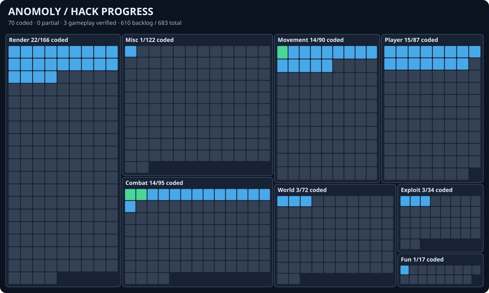

One tile per researched feature. Tile area is proportional to category size. Blue means coded and compiled, amber means partial, green means gameplay verified, and gray means backlog. Startup validation alone does not count as gameplay verification.

70 coded, 1 partial, 23 gameplay verified, 589 backlog, 683 total. Raw data.
| Category | Verified | Coded | Partial | Backlog | Total |
|---|---|---|---|---|---|
| Combat | 20 | 12 | 1 | 62 | 95 |
| Exploit | 0 | 3 | 0 | 31 | 34 |
| Fun | 0 | 1 | 0 | 16 | 17 |
| Misc | 0 | 1 | 0 | 121 | 122 |
| Movement | 1 | 13 | 0 | 76 | 90 |
| Player | 2 | 15 | 0 | 70 | 87 |
| Render | 0 | 22 | 0 | 144 | 166 |
| World | 0 | 3 | 0 | 69 | 72 |
| Category | Feature | Status | Implementation |
|---|---|---|---|
| Combat | AimAssist | verified | In a local 26.3 multiplayer world, yaw/pitch changed from 0/0 to -14.04/11.72 while attack was held and a visible mob was within FOV. See docs/test-evidence/2026-10-30-local-gameplay.md. |
| Combat | Aimbot | verified | In a local 26.3 multiplayer world, yaw/pitch changed from 0/0 to -26.57/10.82 toward a stationary visible mob, without an attack key press. See docs/test-evidence/2026-10-30-local-gameplay.md. |
| Combat | Anchor Aura | backlog | |
| Combat | Anti Anvil | backlog | |
| Combat | Anti Bed | backlog | |
| Combat | AntiBot | coded | Conservative player-list, entity-age, and optional invisibility filters shared by automatic combat modules; detection against a real anticheat decoy is unverified. |
| Combat | AntiLegitMiss | backlog | |
| Combat | Arrow Dodge | backlog | |
| Combat | ArrowDmg | backlog | |
| Combat | Attribute Swap | backlog | |
| Combat | Auto Anvil | backlog | |
| Combat | Auto City | backlog | |
| Combat | Auto Exp | verified | On a local vanilla 26.3 server, six XP bottles repaired a Mending iron helmet from damage 100 to 24, then stopped; a non-Mending helmet consumed none. Six offhand bottles repaired a held Mending iron pickaxe from damage 100 to 20. See docs/test-evidence/2026-10-30-autoexp.md. |
| Combat | Auto Totem | coded | AutoTotem |
| Combat | Auto Web | backlog | |
| Combat | AutoAnchor | backlog | |
| Combat | AutoArmor | coded | AutoArmor |
| Combat | AutoBed | backlog | |
| Combat | AutoBow | verified | Auto Bow selected weapons from the hotbar, charged and fired a bow and crossbow, and threw a trident without manual input. Both shots killed pigs at 16 blocks; the trident reduced a pig to 2 health. Each run restored the stone slot. See docs/test-evidence/2026-10-30-autobow.md. Reduced bow charge, pre-charged crossbows, and moving targets remain untested. |
| Combat | AutoBowRelease | coded | AutoBowRelease |
| Combat | AutoClicker | coded | AutoClicker |
| Combat | AutoCrystalBase | backlog | |
| Combat | AutoDodge | backlog | |
| Combat | AutoGApple | coded | AutoGApple |
| Combat | AutoHole | backlog | |
| Combat | AutoLeave | coded | AutoLeave |
| Combat | AutoPearl | verified | In a local two-player 26.3 test, AutoPearl followed another player's ender pearl, consumed one pearl, landed about 1.4 blocks from that player, and restored the original hotbar slot. See docs/test-evidence/2026-10-30-autopearl.md. |
| Combat | AutoPot | verified | AutoPotion implements the AutoPot behavior: at 8 health, it selected and threw one healing splash potion, raising health to 16.5 and restoring the stone slot. Harming potions were ignored. See docs/test-evidence/2026-10-30-potions.md. |
| Combat | AutoPotion | verified | At 8 health, AutoPotion selected and threw one healing splash potion, raising health to 16.5 and restoring the stone slot. Harming potions were ignored. See docs/test-evidence/2026-10-30-potions.md. |
| Combat | AutoRod | verified | With stone selected and a rod in the next hotbar slot, Auto Rod repeatedly hooked and reeled a stationary pig six blocks away. Server rod damage reached 30, consistent with six entity-hook reels at five durability each; the stone slot was restored. See docs/test-evidence/2026-10-30-autorod.md. |
| Combat | AutoShoot | verified | With stone selected and snowballs in the next hotbar slot, Auto Shoot selected, aimed, and threw without user input until it killed a stationary blaze at about 12 blocks; see docs/test-evidence/2026-10-30-autoshoot.md. |
| Combat | AutoSoup | verified | At 10 health and 11 food on a vanilla 26.3 server, Auto Soup selected mushroom stew, consumed it into a bowl, raised food to 17, and restored the stone slot. Stock soup did not directly heal; soup PvP plugin behavior remains untested. See docs/test-evidence/2026-10-30-soup.md. |
| Combat | AutoSurround | backlog | |
| Combat | AutoSword | coded | AutoSword |
| Combat | AutoTrap | backlog | |
| Combat | AutoWeapon | coded | AutoWeapon |
| Combat | Backtrack | backlog | |
| Combat | Bed Aura | backlog | |
| Combat | Blocker | backlog | |
| Combat | BonemealAura | backlog | |
| Combat | Bow Aimbot | verified | Bow and arrow-loaded crossbow modes each hit and killed a stationary pig at about 16 blocks in a local 26.3 multiplayer world. Firework mode remains untested; see docs/test-evidence/2026-10-30-projectile-aim.md. |
| Combat | Bow Spam | verified | On a local vanilla 26.3 server, six seconds of held use consumed 15 arrows with an 8-tick bow charge; seven seconds consumed four arrows with a crossbow. See docs/test-evidence/2026-10-30-bowspam.md. |
| Combat | BowPop | backlog | |
| Combat | Burrow | backlog | |
| Combat | ClickAura | backlog | |
| Combat | Criticals | verified | A local vanilla 26.3 server recorded an iron sword hit on a stationary pig for 9 damage with Criticals, versus 6 without it; a low ceiling fell back to 6 damage. Combined with Kill Aura, one isolated hit dealt 9 damage after fixing its early punch packet. See docs/test-evidence/2026-10-30-criticals.md. |
| Combat | CrystalAura | backlog | |
| Combat | DroneControl | backlog | |
| Combat | ElytraTarget | backlog | |
| Combat | FakeLag | backlog | |
| Combat | FeedAura | backlog | |
| Combat | FeetTrap | backlog | |
| Combat | FightBot | backlog | |
| Combat | Hitbox | backlog | |
| Combat | HitboxIgnore | backlog | |
| Combat | HoleFiller | backlog | |
| Combat | Hunt | backlog | |
| Combat | KeepSprint | verified | A local two-player 26.3 test showed the server's sprint predicate true after a hit with Keep Sprint enabled; the paired control went from true before the hit to false afterward. Local horizontal velocity restoration is implemented but not separately measured. See docs/test-evidence/2026-10-30-sprint-combat.md. |
| Combat | KillAura | coded | KillAura |
| Combat | KillauraLegit | backlog | |
| Combat | KillPotion | backlog | |
| Combat | LegitHelper | backlog | |
| Combat | MaceDmg | backlog | |
| Combat | MaceKill | backlog | |
| Combat | MoreKnockback | backlog | |
| Combat | MultiAura | backlog | |
| Combat | NoMissCooldown | backlog | |
| Combat | PistonAura | backlog | |
| Combat | PistonPush | backlog | |
| Combat | Pot | verified | The one-shot hotbar swap threw healing and poison splash potions and a slowness lingering potion on a local 26.3 server, restored stone, and disabled itself. See docs/test-evidence/2026-10-30-pot.md. |
| Combat | ProjectileAimbot | verified | Snowball mode hit a stationary blaze at about 12 blocks, reducing health from 20 to 17. Other weapon modes remain untested in gameplay; see docs/test-evidence/2026-10-30-projectile-aim.md. |
| Combat | Protect | backlog | |
| Combat | PvpInfo | backlog | |
| Combat | Quiver | backlog | |
| Combat | Self Anvil | backlog | |
| Combat | Self Trap | backlog | |
| Combat | Self Web | backlog | |
| Combat | SelfFill | backlog | |
| Combat | SmoothAim | backlog | |
| Combat | Soup | verified | A K key toggle selected and consumed mushroom stew from hotbar slot 3, raised food from 8 to 14, restored stone in slot 0, and disabled the one-shot module on a vanilla 26.3 server. See docs/test-evidence/2026-10-30-soup.md. |
| Combat | Spear Assist | coded | SpearAssist |
| Combat | SpearKill | backlog | |
| Combat | SprintReset | verified | A local two-player 26.3 test showed the server's sprint predicate true immediately after a player hit with Sprint Reset enabled, versus false in the paired control. See docs/test-evidence/2026-10-30-sprint-combat.md. |
| Combat | SuperKnockback | partial | The sprint bonus is gameplay verified: a target player moved about 3.62 blocks after the hit versus 1.99 blocks in a paired unsprinted control, with equal damage. Vanilla's damage cooldown still blocks knockback during immune hits; that catalog behavior remains unresolved. See docs/test-evidence/2026-10-30-sprint-combat.md. |
| Combat | Surround | backlog | |
| Combat | SwordBlock | backlog | |
| Combat | ThrowPot | verified | A low-health toggle consumed two healing potions and restored stone; a higher-health toggle consumed one. The module disabled itself after each sequence. See docs/test-evidence/2026-10-30-potions.md. |
| Combat | TickBase | backlog | |
| Combat | Tillaura | backlog | |
| Combat | TimerRange | backlog | |
| Combat | TNTAura | backlog | |
| Combat | TpAura | backlog | |
| Combat | TriggerBot | coded | TriggerBot |
| Combat | TrollPotion | backlog | |
| Combat | WTap | verified | A local paired two-player test showed a server-observed sprint stop and restart and about 0.94 fewer blocks of forward movement at the matched mid-test sample; releasing W during the tap prevented sprint restart. Tested with an 8-tick release for observability; the 2-tick default remains untested. See docs/test-evidence/2026-10-30-wtap.md. |
| Exploit | AbortBreaking | backlog | |
| Exploit | Anti Fire | backlog | |
| Exploit | AntiHunger | backlog | |
| Exploit | AntiPacket | backlog | |
| Exploit | AntiReducedDebugInfo | coded | AntiReducedDebugInfo |
| Exploit | BookBot | backlog | |
| Exploit | ColorSigns | backlog | |
| Exploit | Damage | backlog | |
| Exploit | Disabler | backlog | |
| Exploit | Dupe | backlog | |
| Exploit | FastProjectile | backlog | |
| Exploit | Franky | backlog | |
| Exploit | GhostHand | backlog | |
| Exploit | Ignite | backlog | |
| Exploit | Kaboom | backlog | |
| Exploit | Kick | backlog | |
| Exploit | Lag | backlog | |
| Exploit | MassTpa | backlog | |
| Exploit | MoreCarry | backlog | |
| Exploit | MultiActions | backlog | |
| Exploit | NameCollector | backlog | |
| Exploit | NoPitchLimit | backlog | |
| Exploit | Orebfuscator | backlog | |
| Exploit | Phase | backlog | |
| Exploit | PingSpoof | backlog | |
| Exploit | Plugins | coded | Inventories root commands and namespaces already visible in the server command tree, with no extra packets; hidden commands cannot be seen. |
| Exploit | PortalMenu | coded | PortalMenu |
| Exploit | ResetVL | backlog | |
| Exploit | ServerCrasher | backlog | |
| Exploit | SleepWalker | backlog | |
| Exploit | Teleport | backlog | |
| Exploit | TimeShift | backlog | |
| Exploit | VehicleOneHit | backlog | |
| Exploit | YggdrasilSignatureFix | backlog | |
| Fun | Breaker | backlog | |
| Fun | CopsAndCrims | backlog | |
| Fun | DankBobbing | backlog | |
| Fun | Derp | backlog | |
| Fun | HandDerp | backlog | |
| Fun | HeadRoll | backlog | |
| Fun | Lsd | backlog | |
| Fun | MileyCyrus | backlog | |
| Fun | Minestrike | backlog | |
| Fun | Murder | backlog | |
| Fun | QuakeCraft | backlog | |
| Fun | RainbowUi | backlog | |
| Fun | SkinDerp | backlog | |
| Fun | SneakyAssassins | backlog | |
| Fun | Tired | backlog | |
| Fun | Twerk | coded | Twerk |
| Fun | Vomit | backlog | |
| Misc | Announcer | backlog | |
| Misc | Anti Aim | backlog | |
| Misc | Anti Desync | backlog | |
| Misc | Anti Packet Kick | backlog | |
| Misc | Anti Sound Lag | backlog | |
| Misc | Anti Vanish | backlog | |
| Misc | AntiBookBan | backlog | |
| Misc | AntiCheatDetect | backlog | |
| Misc | AntiCrash | backlog | |
| Misc | AntiQuit | backlog | |
| Misc | AntiServerAdd | backlog | |
| Misc | AntiServerRP | backlog | |
| Misc | AntiSpam | backlog | |
| Misc | AntiStaff | backlog | |
| Misc | ArmorAlert | backlog | |
| Misc | Auto Cheat | backlog | |
| Misc | Auto Reconnect | coded | AutoReconnect |
| Misc | AutoAccept | backlog | |
| Misc | AutoAccount | backlog | |
| Misc | AutoAuth | backlog | |
| Misc | AutoChatGame | backlog | |
| Misc | AutoComplete | backlog | |
| Misc | AutoConfig | backlog | |
| Misc | AutoEZ | backlog | |
| Misc | AutoFlyme | backlog | |
| Misc | AutoGear | backlog | |
| Misc | AutoTrader | backlog | |
| Misc | Background | backlog | |
| Misc | Baritone | backlog | |
| Misc | BaritoneSettings | backlog | |
| Misc | BeaconSelector | backlog | |
| Misc | Better Beacons | backlog | |
| Misc | Capes | backlog | |
| Misc | Chat | backlog | |
| Misc | ChatAppend | backlog | |
| Misc | ChatColors | backlog | |
| Misc | ChatTranslator | backlog | |
| Misc | ChatUtils | backlog | |
| Misc | ChestAura | backlog | |
| Misc | ChorusExploit | backlog | |
| Misc | ClickGUI | backlog | |
| Misc | ClientSettings | backlog | |
| Misc | ClientSpoof | backlog | |
| Misc | Colors | backlog | |
| Misc | Config | backlog | |
| Misc | CustomFont | backlog | |
| Misc | DebugRecorder | backlog | |
| Misc | Discord Presence | backlog | |
| Misc | Discord RPC | backlog | |
| Misc | EasyPearl | backlog | |
| Misc | EbatteSratte | backlog | |
| Misc | Entities | backlog | |
| Misc | ExtraChat | backlog | |
| Misc | Fancy Chat | backlog | |
| Misc | FastLatency | backlog | |
| Misc | FlagCheck | backlog | |
| Misc | Font | backlog | |
| Misc | Ghost | backlog | |
| Misc | GreenText | backlog | |
| Misc | Greeter | backlog | |
| Misc | GUICloser | backlog | |
| Misc | Heaven | backlog | |
| Misc | HudEditor | backlog | |
| Misc | InfiniChat | backlog | |
| Misc | InvCleaner | backlog | |
| Misc | Inventory Tweaks | backlog | |
| Misc | ItemScroller | backlog | |
| Misc | LagNotifier | backlog | |
| Misc | Language | backlog | |
| Misc | Log Position | backlog | |
| Misc | Macros | backlog | |
| Misc | Media | backlog | |
| Misc | Message Aura | backlog | |
| Misc | MessageAppend | backlog | |
| Misc | Middle Click Friend | backlog | |
| Misc | MiddleClick | backlog | |
| Misc | MiddleClickAction | backlog | |
| Misc | NameProtect | backlog | |
| Misc | No SRP | backlog | |
| Misc | NoCommentExploit | backlog | |
| Misc | NoPacketException | backlog | |
| Misc | NoSoundLag | backlog | |
| Misc | Notebot | backlog | |
| Misc | NoteTuner | backlog | |
| Misc | Notifications | backlog | |
| Misc | Notifier | backlog | |
| Misc | OptifineCapes | backlog | |
| Misc | Packet Canceller | backlog | |
| Misc | PacketLogger | backlog | |
| Misc | Panic | backlog | |
| Misc | PearlChaser | backlog | |
| Misc | RichPresence | backlog | |
| Misc | Rotations | backlog | |
| Misc | RusherCrypt | backlog | |
| Misc | Self Destruct | backlog | |
| Misc | Server Spoof | backlog | |
| Misc | ServerHelper | backlog | |
| Misc | Signs | backlog | |
| Misc | SongStealer | backlog | |
| Misc | Sound Blocker | backlog | |
| Misc | SoundFX | backlog | |
| Misc | Spam | backlog | |
| Misc | Spammer | backlog | |
| Misc | StashLogger | backlog | |
| Misc | Swarm | backlog | |
| Misc | TapeMouse | backlog | |
| Misc | TargetLock | backlog | |
| Misc | Teams | backlog | |
| Misc | TextFieldProtect | backlog | |
| Misc | Theme | backlog | |
| Misc | ThunderGui | backlog | |
| Misc | Timestamps | backlog | |
| Misc | Tooltips | backlog | |
| Misc | TooManyHax | backlog | |
| Misc | TotemPopCounter | backlog | |
| Misc | Tracker | backlog | |
| Misc | Translate | backlog | |
| Misc | UnfocusedFPS | backlog | |
| Misc | UnHook | backlog | |
| Misc | Unpack | backlog | |
| Misc | VisualRange | backlog | |
| Misc | Windows | backlog | |
| Movement | AirJump | coded | AirJump |
| Movement | Anchor | backlog | |
| Movement | Anti Hazard | backlog | |
| Movement | AntiBounce | backlog | |
| Movement | AntiCactus | backlog | |
| Movement | AntiLevitation | backlog | |
| Movement | AntiVoid | backlog | |
| Movement | AntiWaterPush | backlog | |
| Movement | AntiWeb | coded | AntiWeb |
| Movement | Auto Jump | coded | AutoJump |
| Movement | Auto Wasp | backlog | |
| Movement | AutoSwim | backlog | |
| Movement | AutoWalk | verified | Enabled through ImGui in a local Minecraft 26.3 multiplayer world; passive movement samples show Z advancing from -78.5 to -65.3 without manual forward input. See docs/test-evidence/2026-10-30-local-gameplay.md. |
| Movement | AvoidHazards | backlog | |
| Movement | BlockBounce | backlog | |
| Movement | BlockWalk | backlog | |
| Movement | BoatFly | backlog | |
| Movement | BunnyHop | backlog | |
| Movement | ClickTp | backlog | |
| Movement | Clip | backlog | |
| Movement | Dolphin | backlog | |
| Movement | Elytra Boost | backlog | |
| Movement | Elytra+ | backlog | |
| Movement | ElytraFly | backlog | |
| Movement | ElytraRecast | backlog | |
| Movement | ElytraTweaks | backlog | |
| Movement | EntityControl | backlog | |
| Movement | EntitySpeed | backlog | |
| Movement | ExtendedFirework | backlog | |
| Movement | ExtraElytra | backlog | |
| Movement | Fast Climb | backlog | |
| Movement | Fast Fall | coded | FastFall |
| Movement | FastAccel | backlog | |
| Movement | FastLadder | coded | FastLadder |
| Movement | FastSwim | backlog | |
| Movement | Fish | backlog | |
| Movement | Fly | backlog | |
| Movement | Follow | backlog | |
| Movement | Freeze | backlog | |
| Movement | Glide | backlog | |
| Movement | Gui Move | backlog | |
| Movement | HandNoClip | backlog | |
| Movement | HighJump | backlog | |
| Movement | HoleAnchor | backlog | |
| Movement | HoleSnap | backlog | |
| Movement | IceSpeed | backlog | |
| Movement | InventoryMove | backlog | |
| Movement | Jesus | backlog | |
| Movement | Jetpack | backlog | |
| Movement | Levitation Control | backlog | |
| Movement | LevitCtrl | backlog | |
| Movement | Liquids | backlog | |
| Movement | LiquidWalk | backlog | |
| Movement | LongJump | backlog | |
| Movement | Navigator | backlog | |
| Movement | NoClip | backlog | |
| Movement | NoFall | coded | NoFall |
| Movement | NoJumpDelay | backlog | |
| Movement | NoPose | backlog | |
| Movement | NoPush | coded | NoPush |
| Movement | NoSlow | coded | NoSlow |
| Movement | NoWaterCollision | backlog | |
| Movement | NoWeb | backlog | |
| Movement | PacketFly | backlog | |
| Movement | Parkour | backlog | |
| Movement | PortalGui | backlog | |
| Movement | ReverseStep | backlog | |
| Movement | Riding | backlog | |
| Movement | SafeWalk | coded | SafeWalk |
| Movement | Slippy | backlog | |
| Movement | SnapTap | backlog | |
| Movement | Sneak | coded | AutoSneak |
| Movement | SnowShoe | backlog | |
| Movement | Speed | backlog | |
| Movement | Spider | backlog | |
| Movement | Sprint | coded | AutoSprint |
| Movement | Step | coded | Step |
| Movement | Strafe | backlog | |
| Movement | TargetStrafe | backlog | |
| Movement | Terrain | backlog | |
| Movement | TerrainSpeed | backlog | |
| Movement | TickShift | backlog | |
| Movement | TridentBoost | backlog | |
| Movement | TridentFly | backlog | |
| Movement | TridentTweaks | backlog | |
| Movement | VehicleBoost | backlog | |
| Movement | VehicleControl | backlog | |
| Movement | Velocity | coded | Velocity |
| Movement | WaterSpeed | backlog | |
| Movement | Yaw | backlog | |
| Player | AntiAFK | coded | AntiAFK |
| Player | AntiAttack | backlog | |
| Player | AntiBadEffects | backlog | |
| Player | AntiBallPlace | backlog | |
| Player | AntiExploit | backlog | |
| Player | ArmorSwitch | backlog | |
| Player | Auto Eat | coded | AutoEat |
| Player | Auto Eject | coded | AutoDrop |
| Player | Auto Gap | backlog | |
| Player | Auto Mend | backlog | |
| Player | Auto Mine | backlog | |
| Player | Auto Replenish | coded | AutoReplenish |
| Player | AutoBreak | coded | AutoBreak |
| Player | AutoBuff | backlog | |
| Player | AutoCrafter | backlog | |
| Player | AutoDeposit | coded | AutoDeposit |
| Player | AutoDrop | coded | AutoDrop |
| Player | AutoFish | coded | AutoFish |
| Player | AutoLibrarian | backlog | |
| Player | AutoQueue | backlog | |
| Player | AutoReply | backlog | |
| Player | AutoRespawn | coded | AutoRespawn |
| Player | AutoSex | backlog | |
| Player | AutoShop | backlog | |
| Player | AutoSorter | backlog | |
| Player | AutoSwitch | coded | AutoSwitch |
| Player | AutoTool | coded | AutoTool |
| Player | AutoWindCharge | backlog | |
| Player | AutoWither | backlog | |
| Player | Blink | backlog | |
| Player | Break Delay | coded | FastBreak |
| Player | Chest Swap | backlog | |
| Player | ChestCleaner | coded | ChestCleaner |
| Player | ChestStealer | coded | ChestStealer |
| Player | ChorusControl | backlog | |
| Player | DurabilityAlert | backlog | |
| Player | Eagle | backlog | |
| Player | ElytraReplace | backlog | |
| Player | ElytraSwap | backlog | |
| Player | Exp Thrower | backlog | |
| Player | Fake Player | backlog | |
| Player | Fast Interact | backlog | |
| Player | FastExp | backlog | |
| Player | FastUse | backlog | |
| Player | Instant Rebreak | backlog | |
| Player | Inventory | backlog | |
| Player | InventoryCleaner | backlog | |
| Player | Item Saver | backlog | |
| Player | Liquid Interact | backlog | |
| Player | Middle Click Extra | backlog | |
| Player | MouseElytraFix | backlog | |
| Player | Multitask | backlog | |
| Player | No Interact | backlog | |
| Player | No Mining Trace | backlog | |
| Player | No Status Effects | backlog | |
| Player | NoBlockInteract | backlog | |
| Player | NoEntityInteract | backlog | |
| Player | NoEntityTrace | backlog | |
| Player | NoRotateSet | verified | Local 26.3 server /rotate and teleport commands left view unchanged with No Rotate enabled; paired control without the module changed view to the requested angles. See docs/test-evidence/2026-10-30-local-gameplay.md. |
| Player | NoServerRotate | verified | Same gameplay-verified No Rotate implementation covers dedicated rotation packets and position corrections. See docs/test-evidence/2026-10-30-local-gameplay.md. |
| Player | NoServerSlot | backlog | |
| Player | NoSlotSet | backlog | |
| Player | Offhand | backlog | |
| Player | PearlBait | backlog | |
| Player | PearlBlockThrow | backlog | |
| Player | PerfectDelay | backlog | |
| Player | PortalGodMode | backlog | |
| Player | PortalInventory | backlog | |
| Player | Portals | backlog | |
| Player | Potion Saver | backlog | |
| Player | PotionSpoof | backlog | |
| Player | Reach | coded | Reach |
| Player | Refill | backlog | |
| Player | Regen | backlog | |
| Player | Replenish | backlog | |
| Player | ReportHelper | backlog | |
| Player | Respawn | backlog | |
| Player | Rotation | backlog | |
| Player | RotationLock | backlog | |
| Player | Skin Blinker | backlog | |
| Player | SmartEat | backlog | |
| Player | Swing | backlog | |
| Player | Throw | backlog | |
| Player | ToolSaver | backlog | |
| Player | TpsSync | backlog | |
| Player | ViewLock | backlog | |
| Player | XCarry | backlog | |
| Render | Animations | backlog | |
| Render | Anti Overlay | coded | AntiOverlay |
| Render | AntiBlind | coded | AntiBlind |
| Render | AntiWobble | coded | AntiWobble |
| Render | ArmorHud | backlog | |
| Render | Aspect | backlog | |
| Render | AspectRatio | backlog | |
| Render | AutoCrystalInfo | backlog | |
| Render | AutoF5 | coded | AutoF5 |
| Render | BarrierEsp | backlog | |
| Render | BedPlates | backlog | |
| Render | Better Tooltips | backlog | |
| Render | BetterChat | backlog | |
| Render | BetterInventory | backlog | |
| Render | BetterTab | backlog | |
| Render | BetterTitle | backlog | |
| Render | Block Selection | backlog | |
| Render | BlockESP | backlog | |
| Render | BlockHighLight | backlog | |
| Render | BlockOutline | backlog | |
| Render | Blur | backlog | |
| Render | Borders | backlog | |
| Render | Boss Stack | backlog | |
| Render | Breadcrumbs | backlog | |
| Render | Break Indicators | backlog | |
| Render | BreakESP | backlog | |
| Render | BreakHighLight | backlog | |
| Render | Camera Tweaks | coded | CameraTweaks |
| Render | CameraClip | coded | CameraClip |
| Render | CandleHud | backlog | |
| Render | CaveFinder | backlog | |
| Render | Chams | backlog | |
| Render | ChestCounter | backlog | |
| Render | City Esp | backlog | |
| Render | CombineMobs | backlog | |
| Render | Companion | backlog | |
| Render | Cooldowns | backlog | |
| Render | Coords | backlog | |
| Render | Crosshair | backlog | |
| Render | CrosshairArrows | backlog | |
| Render | CrystalView | backlog | |
| Render | CustomAmbience | backlog | |
| Render | DamageParticles | backlog | |
| Render | DamageTint | backlog | |
| Render | Debug | backlog | |
| Render | Enchant Color | backlog | |
| Render | Entity Owner | backlog | |
| Render | ESP | backlog | |
| Render | ExtraScreenshot | backlog | |
| Render | ExtraTab | backlog | |
| Render | ExtraTooltips | backlog | |
| Render | FOV | coded | FovOverride |
| Render | FOVModifier | coded | FovOverride |
| Render | FpsCounter | backlog | |
| Render | FreeCam | backlog | |
| Render | FreeLook | coded | FreeLook |
| Render | FullBright | coded | Fullbright |
| Render | GapplesHud | backlog | |
| Render | Hand View | backlog | |
| Render | Hats | backlog | |
| Render | HealthTags | backlog | |
| Render | HitBubbles | backlog | |
| Render | HitFX | backlog | |
| Render | Hitmarkers | backlog | |
| Render | HitParticles | backlog | |
| Render | HoleESP | backlog | |
| Render | Hotbar | backlog | |
| Render | HUD | backlog | |
| Render | InventoryInfo | backlog | |
| Render | Item Highlight | backlog | |
| Render | Item Physics | backlog | |
| Render | ItemChams | backlog | |
| Render | ItemESP | backlog | |
| Render | ItemTags | backlog | |
| Render | JumpCircle | backlog | |
| Render | JumpEffect | backlog | |
| Render | KeyBinds | backlog | |
| Render | KillEffect | backlog | |
| Render | KillFeed | backlog | |
| Render | KillStats | backlog | |
| Render | LagDetector | backlog | |
| Render | LagReducer | backlog | |
| Render | LegacyHud | backlog | |
| Render | Light Overlay | backlog | |
| Render | LogoffSpot | backlog | |
| Render | Logout Spots | backlog | |
| Render | Main Menu | backlog | |
| Render | Marker | backlog | |
| Render | MemoryHud | backlog | |
| Render | MobEsp | backlog | |
| Render | MobOwners | backlog | |
| Render | MobSpawnEsp | backlog | |
| Render | ModuleList | backlog | |
| Render | MurderMystery | backlog | |
| Render | Nametags | backlog | |
| Render | NewChunks | backlog | |
| Render | No Render | backlog | |
| Render | NoBackground | backlog | |
| Render | NoBob | coded | NoBob |
| Render | NoFireOverlay | coded | NoFireOverlay |
| Render | NoFog | coded | NoFog |
| Render | NoFOV | coded | NoFov |
| Render | NoHurtCam | coded | NoHurtCam |
| Render | NoOverlay | coded | NoOverlay |
| Render | NoPumpkin | coded | NoPumpkin |
| Render | NoSwing | backlog | |
| Render | NoVignette | backlog | |
| Render | NoWeather | coded | WeatherChanger |
| Render | OldPotions | backlog | |
| Render | OpenWaterEsp | backlog | |
| Render | Overlay | backlog | |
| Render | Particles | backlog | |
| Render | PenisESP | backlog | |
| Render | PingHud | backlog | |
| Render | PlayerEsp | backlog | |
| Render | Pop Chams | backlog | |
| Render | PortalEsp | backlog | |
| Render | PotionFX | backlog | |
| Render | PotionHud | backlog | |
| Render | ProphuntESP | backlog | |
| Render | ProtectionZones | backlog | |
| Render | PVPResources | backlog | |
| Render | QuickPerspectiveSwap | backlog | |
| Render | Radar | coded | PlayerRadar |
| Render | RadarRewrite | backlog | |
| Render | RainbowEnchant | backlog | |
| Render | RangeCircle | backlog | |
| Render | Rearview | backlog | |
| Render | RemoteView | backlog | |
| Render | Search | backlog | |
| Render | Shaders | backlog | |
| Render | SilentHotbar | backlog | |
| Render | Skeleton | backlog | |
| Render | SkinChanger | backlog | |
| Render | Skybox | backlog | |
| Render | SmallShield | backlog | |
| Render | SmoothCamera | backlog | |
| Render | SoundESP | backlog | |
| Render | Speedometer | backlog | |
| Render | StaffBoard | backlog | |
| Render | StorageESP | backlog | |
| Render | TargetHud | backlog | |
| Render | Time Changer | coded | TimeChanger |
| Render | TimerIndicator | backlog | |
| Render | TNTTimer | backlog | |
| Render | TotemAnimation | backlog | |
| Render | TotemCounter | backlog | |
| Render | TotemEffect | backlog | |
| Render | TPSCounter | backlog | |
| Render | Tracers | backlog | |
| Render | Trail | backlog | |
| Render | Trails | backlog | |
| Render | Trajectories | backlog | |
| Render | TrueSight | backlog | |
| Render | Tunnel Esp | backlog | |
| Render | ViewClip | backlog | |
| Render | ViewModel | backlog | |
| Render | VoidESP | backlog | |
| Render | Wall Hack | backlog | |
| Render | WaterMark | backlog | |
| Render | Waypoints | backlog | |
| Render | Weather Changer | coded | WeatherChanger |
| Render | Wireframe | backlog | |
| Render | WorldTweaks | backlog | |
| Render | XRay | backlog | |
| Render | Zoom | coded | Zoom |
| World | AirPlace | backlog | |
| World | Ambience | backlog | |
| World | AntiInteract | backlog | |
| World | Auto Breed | backlog | |
| World | Auto Brewer | backlog | |
| World | Auto Mount | backlog | |
| World | Auto Nametag | backlog | |
| World | Auto Shearer | backlog | |
| World | Auto Sign | backlog | |
| World | Auto Smelter | backlog | |
| World | AutoBuild | backlog | |
| World | AutoDisable | backlog | |
| World | AutoFarm | backlog | |
| World | AutoMobHeal | backlog | |
| World | AutoTunnel | backlog | |
| World | Avoid | backlog | |
| World | BaseFinder | backlog | |
| World | BedDefender | backlog | |
| World | BlockIn | backlog | |
| World | BlockTrap | backlog | |
| World | BlockTweaks | backlog | |
| World | Build | backlog | |
| World | Build Height | backlog | |
| World | BuildRandom | backlog | |
| World | ClientSideTime | backlog | |
| World | Collisions | backlog | |
| World | CrashChest | backlog | |
| World | Echest Farmer | backlog | |
| World | Enderman Look | backlog | |
| World | Environment | backlog | |
| World | Excavator | backlog | |
| World | Extinguish | backlog | |
| World | ExtraChest | backlog | |
| World | ExtraCraft | backlog | |
| World | ExtraSign | backlog | |
| World | FastBreak | coded | FastBreak |
| World | FastPlace | coded | FastPlace |
| World | Flamethrower | backlog | |
| World | ForceOp | backlog | |
| World | ForcePlace | backlog | |
| World | Fucker | backlog | |
| World | Gamemode | backlog | |
| World | Highway Builder | backlog | |
| World | Infinity Miner | backlog | |
| World | InstaBuild | backlog | |
| World | InstantBunker | backlog | |
| World | InventoryTracker | backlog | |
| World | ItemGenerator | backlog | |
| World | LiquidFiller | backlog | |
| World | LiquidPlace | backlog | |
| World | No Ghost Blocks | backlog | |
| World | NoGlitchBlocks | backlog | |
| World | NoInterpolation | backlog | |
| World | NoMineAnimation | backlog | |
| World | NoSlowBreak | backlog | |
| World | Nuker | backlog | |
| World | NukerLegit | backlog | |
| World | PacketMine | backlog | |
| World | ProjectilePuncher | backlog | |
| World | Scaffold | backlog | |
| World | SelfBlock | backlog | |
| World | SourceRemover | backlog | |
| World | Spawn Proofer | backlog | |
| World | SpeedNuker | backlog | |
| World | Stash Finder | backlog | |
| World | StrongholdFinder | backlog | |
| World | TemplateTool | backlog | |
| World | Timer | backlog | |
| World | TreeBot | backlog | |
| World | Tunneller | backlog | |
| World | Vein Miner | backlog | |
| World | Weather | coded | Controls the local weather view; server weather remains authoritative. |